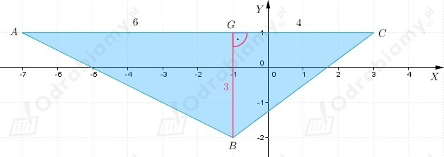

| Przypomnijmy, że odległość między punktami A(x1, y1) i B(x2, y2) wyraża się za pomocą wzoru:
|
a)
Odległość między punktami A i B
b)
Odległość między punktami A i B
c)
Odległość między punktami A i B
d)
Odległość między punktami A i B
Przyjmijmy oznaczenia jak na rysunku poniżej.

Obliczmy długość odcinka BC korzystając z twierdzenia Pitagorasa do trójkąta BCG
Obliczmy długość odcinka AB korzystając z twierdzenia Pitagorasa do trójkąta ABG
Zatem
Przyjmijmy oznaczenia jak na rysunku poniżej.
Obliczmy długość odcinka DE korzystając z twierdzenia Pitagorasa do trójkąta DHE
Obliczmy długość odcinka EF korzystając z twierdzenia Pitagorasa do trójkąta EFI
Obliczmy długość odcinka DF korzystając z twierdzenia Pitagorasa do trójkąta DFJ
Zatem
Aby trójkąt ABC był równoramienny, to długości dwóch jego boków muszą być takie same.
Zatem obliczmy długości wszystkich boków trójkąta ABC, aby sprawdzić czy ten trójkąt jest równoramienny.
a)
Współrzędne wierzchołków trójkąta są następujące
Zauważmy, że żadne dwie długości boków trójkąta nie są takie same, zatem wnioskujemy, że
trójkąt ABC nie jest trójkątem równoramiennym.
b)
Współrzędne wierzchołków trójkąta są następujące
Zauważmy, że |AB|=|BC|, zatem trójkąt ABC jest trójkątem równoramiennym.
c)
Współrzędne wierzchołków trójkąta są następujące
Zauważmy, że |AB|=|AC|, zatem trójkąt ABC jest trójkątem równoramiennym.
d)
Współrzędne wierzchołków trójkąta są następujące
Zauważmy, że żadne dwie długości boków trójkąta nie są takie same, zatem wnioskujemy, że
trójkąt ABC nie jest trójkątem równoramiennym.